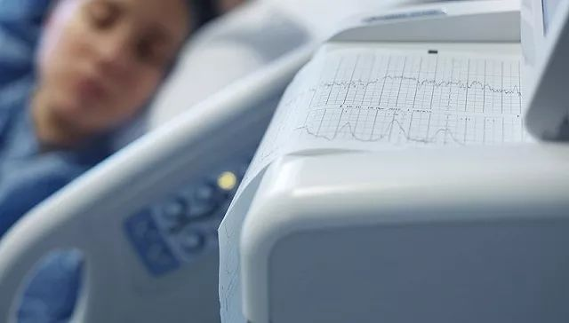

治愈者口述：全家染病，我也跟病毒抗争了20天
原文链接 备份链接 作者：刘倩 来源：*商业人物*（ID：*****biz-leaders）* 周宁没有想过自己会得新冠肺炎，就像他没有想过从小到大经常光顾的华南海鲜市场会成为给他带来这场无妄之灾的罪魁祸首。他没有海鲜市场暴露史，却因为家 …

图片来源：视觉中国
实习记者：佘晓晨
“
在分享自己用药过程的同时，她一再强调每个人情况都不一样，但心态一定要好——要安心吃药、按时吃药，不要自己吓自己，相信自己会好的。
”
作为一个新冠肺炎轻症患者，林琪经历了13天难熬的等待和治疗期，成功治愈回家。
出院之后，林琪在家进行单间隔离。她和网友分享了自己治疗的过程，希望可以帮到更多人。在分享自己用药过程的同时，她一再强调每个人情况都不一样，但心态一定要好——要安心吃药、按时吃药，不要自己吓自己，相信自己会好的。
出院那天，她在微博上说，“希望我的国家，我的城市，像我一样好起来。”
以下是她的口述：
我从事医疗器械行业，家住在黄石。这次感染最终治愈回家后，我一直在回忆自己的经历。很多网友来问我具体的治疗过程、用了什么药物之类的，我和大家分享了不少内容，还拍了视频给大家看，恢复的状态还是挺好的。
早在1月27号，我量体温发现有37.5度。在这之前，好几天都是咳嗽，干咳，不过精神状况和胃口都还可以。
当时如果不是看到发生疫情的消息，我可能还会挺一挺，因为我本身也不严重，没有特别的身体反应，后来还是觉得有必要去医院检查确认下，因为我老公是1月22号晚上从武汉回来的，虽然到目前为止他都没有被感染的症状。
当天我决定一个人开车去黄石市第二医院检查，去之前没做什么准备，家里人也觉得我应该不会有什么事。结果到了医院检查完之后，医生告诉我双肺有感染，问了基本情况，然后建议住院隔离观察。这一待，就是十几天。
之后等待确诊的过程是最难熬的。1月28号，我住进了单间隔离病房。第一次住院就“享受”单人间，我只能苦笑，实际上，那天晚上我就开始焦躁了，女儿才四岁半，如果真的确诊了，我特别担心自己传染给她，也特别想念她。
在医院待着的前两天一直没有治疗，感觉咳嗽越来越严重了。直到1月29号，住院的第三天，早上五点多护士全副武装进来，给我抽血。
当时看了一眼手机，老公发来消息，说他和女儿都醒了，让我接着睡，后来老爸又打来电话说要给我送东西，被我拒绝了。老年人本身就易感，我真的不想让他到医院来。
当天上午，社区和疾控中心的人一直给我打电话，询问发病情况和接触史等。等到中午，护士就来通知，过一会儿要转院。我问她是不是确诊了，她说还要等医生来通知。那种情况下，我很焦虑，特别想知道结果。一直等到下午两点多，医生才通知我，确定被感染了，要转院到黄石市中医医院（市传染病医院）。
我们一行7个轻症患者，一起坐救护车前往中医医院。我记得当时的气氛是，大家都有些焦躁，其中三个人是一家人，一直在说特别后悔之前去拜年，说不定把别人也给害了。
到了医院真正安顿下来之后，因为已经接受了这件事，我的心态反而比较好了。我老公开始不相信，有点接受不了，但等我真的去了医院，他又开始鼓励我，跟我说“相信你会没事的。”
我和我老公在一起十一年了，结婚有五六年，感情其实已经归于平淡。出院以后，他告诉我，其实当时他非常着急，不知道我在医院到底是什么情况。他说，第一次意识到，我在他身边比什么都重要。
我想过要不要把感染的消息发出来，最后还是决定不隐瞒。那段时间里，我一直发微博更新情况，因为心情很焦急，又不想在朋友圈说，微博算是一个小窗口。被网友关注到之后，很多人都挺关心我，我就第一时间在微博上说了确诊的结果。之后的几个小时里，我一直在网上交流情况，好多人都鼓励我坚强，让我加油，最后有100个人留言鼓励，让我很感动。
住院期间，我每天都和女儿视频，一开始她都会问妈妈去哪儿了。她才四岁半，不知道“病毒”是什么，出院回家之后跟她说这些，她还是一副很懵懂的样子，只是问为什么不能去上学。我妈妈没跟我们住一起，她是最紧张的人。在我住院的那几天，为了不影响我休息和治疗，她不敢给我打电话，但每天甚至打十几个电话去家里问我的情况。
我每天按医生说的按时吃药，按时吃饭，多喝水，基本上没有想其他的，因为好多人比我严重，我觉得自己应该也不会怎样。同病房的一个病友来的时候病情最重，发烧都是高达40度，但在医生的救治下比我还先出院。所以我在微博上说，不要觉得发烧就是更严重了，这是有一个过程的，你只需要安心吃药、按时吃药，不要自己吓自己，相信自己会好的。
我们病房里都是轻症患者，相互打气鼓励比较多，因为都是年轻人，大部分时候是各自休息，到了饭点就会讨论哪个菜最好吃，劝挑食的病友多吃点。旁边的姑娘隔几个小时就要跟她老公视频，大家还会开玩笑。
不过，2月4号早上有个患者去了ICU，医生在微信群里说要和家属交代一下病情，做好心理准备。进医院这么长时间以来，这是我第一次听说有病人快不行了，当时就感觉，你永远不知道，明天和意外哪一个先来。
其实真正成了患者，才知道医护人员有多辛苦，跟看新闻的那种感动不一样。患者每天还能躺在床上休息，但是医生护士不能休息，每天都要陪着我们，还要打针、发药、发饭。我印象最深的是，有一次一个医生瘸着腿来查房，还要安慰病人。我问他怎么了，他跟我说腿太疼了。
一开始住进医院我每天都刷新闻，确诊之前，还联系同学找到了100个口罩捐给武汉红十字会。读书的时候我在武汉待了很久，对这座城市也有感情，看到疫情的新闻会觉得很沉重，所以后来就基本上不看了，尽量让自己看点别的，放松一些。
2月6号，医生给我开了核酸检测。第一次结果是阴性。7号又做了第二次检测，两次诊断结果都为阴性。到了8号早上，做完CT后，医生通知我，可以出院了。
终于可以回家了。当初一起转院的那个女孩很为我开心，但看到我可以出院了她又很紧张，因为她的症状也很轻，也检测了两次，结果第一次阴性，第二次又阳性了，医生说还要再继续治疗。我们没有加微信，出院之后我也退出了病房的群，希望她现在也出院了。
出院之后，我妈立刻给我打来了电话，她一下子就哭了，说从来没这么担心和难受过。我又在微博上发了自己出院的消息，当时我写道，真心希望我的国家，我的城市像我一样好起来。
为什么全家只有我感染了？后期我们仔细回想了一下，老公开车从武汉回来之后，我们曾和女儿一起去过超市买东西，三个人都戴了口罩，但是中途我的口罩有点问题，就取下来了一会儿，之后再没出过门。所以，我是不是在超市里被传染了？现在也说不好，这只是猜想。
有个事值得说一说。回家之后有物业的人来封门，我老公和他们起了一些争执，家里人心情本来就很焦灼，物业态度很强硬，也不敲门，说话很霸道。
最主要的是，封门之前没有人通知我们。家人从我确诊到出院就没出去过，2月10号说解除隔离了，老公出去买了一次菜，然后突然又来封门，我们也没提前做准备，所以有点让人接受不了。
第一次争执之后，第二次物业的人又半夜两三点偷偷来封门。我们跟社区反映了问题，社区的工作人员态度还是挺好的。2月12日早上，公安局的人来敲门，跟我们说要封门，整个过程比较温和，处理的挺好，我们也愿意配合。
我觉得，双方都要互相理解，但封门的事情还是派一些基层工作比较熟练的社区人员去做比较好，避免争执。当然这只是个人建议，等我隔离结束了，我也想去做志愿者，尽自己的一份力。
之前在抖音上看到过一个广东的小伙子出院之后自愿捐血浆，如果需要，我也愿意捐出含抗体的血浆，去救助那些生病的患者。我真的希望疫情快点过去，大家都平平安安，所有的医务人员和基层工作人员都能安全回家团聚。
经历这次患病 ，我和老公都觉得自己很幸运。对我自己来说，最大的变化就是真正意识到了健康第一，以前我完全不克制自己熬夜，看到好看的书无论多晚都要看完。不过现在是逼着自己早点睡觉，睡不着就躺着，一定要把作息规律调整好。
我老公说，以前经常忙于工作，现在觉得任何东西都比不上家人在身边重要。他老家在东北，今年没能回去，公公婆婆其实也一直担心我们。等疫情过去了，我想做的第一件事就是带上女儿，和老公一起回去看看两位老人家。
（应受访者要求，林琪为化名）
未经授权 禁止转载

原文链接 备份链接 作者：刘倩 来源：*商业人物*（ID：*****biz-leaders）* 周宁没有想过自己会得新冠肺炎，就像他没有想过从小到大经常光顾的华南海鲜市场会成为给他带来这场无妄之灾的罪魁祸首。他没有海鲜市场暴露史，却因为家 …
原文链接 备份链接 我觉得，我们是来这里治病的，这种临时搭建起来的地方，基本条件过得去就可以了。特殊时期，大家需要互相谅解。我也相信，疫情过去后，一切都会好起来的。 口述 | 李 甜 整理 | 应 琛 我今年43岁，在武汉硚口区税务局工 …
原文链接 备份链接 2月5日，一条报道了武汉女孩素素的故事， 当天微信阅读超过120万。 她通过自己在家隔离，熬过了这次的新型肺炎， 同时，还有更多的人在经历着生离死别。 纬纬和妈妈 故事发布后， 文章中的另一个女孩纬纬当天在后台联系我 …
原文链接 备份链接 杨晨还在等通知。他在等待“十号令”带给他以及他的家庭命运的转机，他是一位“武汉病人”的家属。 让他有所期许的“十号令”，是2月2日发出的。按照“十号令”的要求，自通告发布之日起，对全市经发热门诊诊断有肺炎症状的发热病人 …
原文链接 备份链接 2月1日，西藏自治区第三人民医院医生土旦朗杰观看病人胸片。目前，西藏唯一一例确诊的新型冠状病毒感染的肺炎患者在此住院治疗。觉果/摄 新华社CNML图片 作者 杨海 编辑 从玉华 李亮是武汉某三甲医院的病房主任，从1月 …